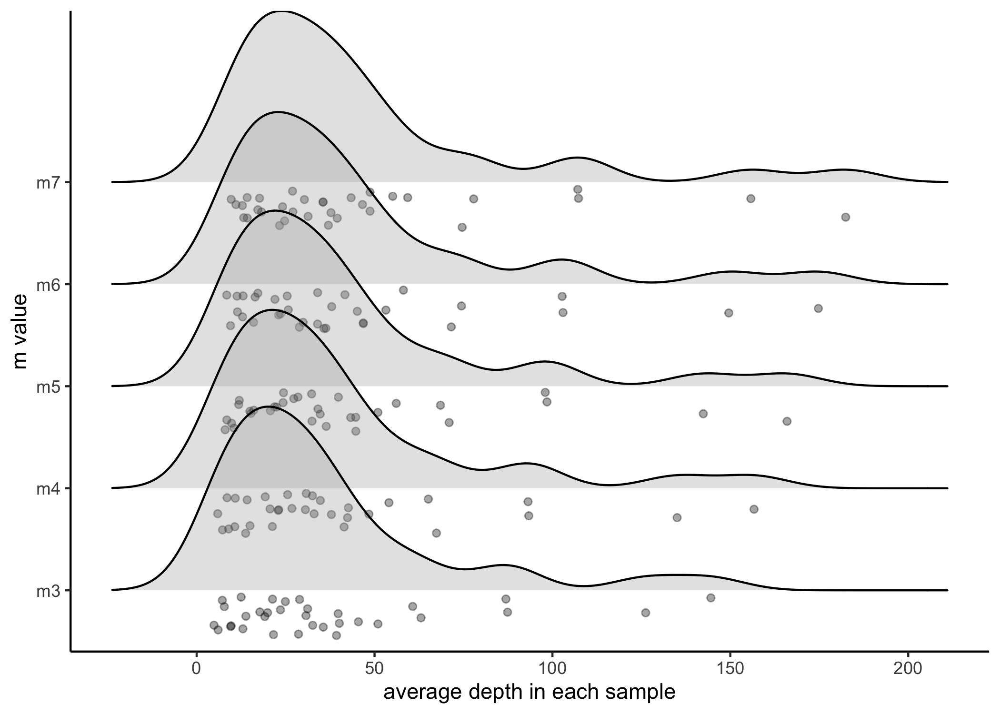

RADstackshelpR offers a handful of useful wrapper functions which streamline the reading, analyzing, and visualizing of variant call format (vcf) files in R. The internal calls of each function rely heavily on the excellent R package vcfR to read in and analyze vcf files, and the widely renowned ggplot2 package to create elegant visualizations. This package was designed to facilitate an explicit pipeline for optimizing STACKS paramaters during de novo (without a reference genome) assembly and variant calling of restriction-enzyme associated DNA sequence (RADseq) data. STACKS is a relatively user-friendly, command-line program designed for assembling RADseq data into loci, and performing variant (SNP) calling. STACKS offers users flexibility in setting parameters during the assembly process, allowing custom parameter optimization for any input dataset. The pipeline implemented here is based on the 2017 paper Lost in Parameter Space which establishes clear recommendations for optimizing the parameters ‘m’, ‘M’, and ‘n’, during the process of assembling loci.
Despite these clear recommendations, the full range of parameter space suggested to explore in this paper is often left unexplored in empirical studies, due to the computational and logistical difficulty of executing and analyzing 16 separate runs through the entire STACKS pipeline. This package is designed to automate that logistical difficulty, leaving users with a clear set of steps to follow for thoroughly optimized, de novo RAD locus assembly and variant calling. Simply follow the steps below to run the optimized de novo assembly pipeline.
Installation
# Install development version from GitHub
devtools::install_github("DevonDeRaad/RADstackshelpR")Usage
The first step is demultiplexing your sequence data using the ‘process_radtags’ function from STACKS, which could be executed by running something like this in a terminal window, if your raw sequence file is in your working directory, and you used the enzyme ‘ndeI’ as your cutter:
Demultiplex
More details on demultiplexing using process_radtags can be found here
Iterate over potential values for the ‘m’ parameter in the ‘ustacks’ module
Once you have an individual zipped fastq file for each sample, we need to iterate over the relevant values for ‘m’ within the ‘ustacks’ module (here using 15 threads at each step to speed up computation). Running the following code in a terminal window will perform five separate iterations of the entire STACKS pipeline, each with a different parameter setting for ‘m’ (3-7), and save the results as an unfiltered vcf file in a specified directory.
#Running in bash/shell
#designate all sample ID's to a single variable called 'files', each sample should be in the directory, and the filename should match this designation except for the extension, e.g., 'sample_2' = 'sample_2.fq.gz'
files="sample_1
sample_2
sample_3
sample_4
sample_5"
# Build loci de novo in each sample for the single-end reads only.
# -M — Maximum distance (in nucleotides) allowed between stacks (default 2).
# -m — Minimum depth of coverage required to create a stack (default 3).
#here, we will vary m from 3-7, and leave all other paramaters default
for i in {3..7}
do
#create a directory to hold this unique iteration:
mkdir stacks_m$i
#run ustacks with m equal to the current iteration (3-7) for each sample
id=1
for sample in $files
do
/home/path/to/stacks-2.41/ustacks -f ${sample}.fq.gz -o stacks_m$i -i $id -m $i -p 15
let "id+=1"
done
## Run cstacks to compile stacks between samples. Popmap is a file in working directory called 'pipeline_popmap.txt'
/home/path/to/stacks-2.41/cstacks -P stacks_m$i -M pipeline_popmap.txt -p 15
## Run sstacks. Match all samples supplied in the population map against the catalog.
/home/path/to/stacks-2.41/sstacks -P stacks_m$i -M pipeline_popmap.txt -p 15
## Run tsv2bam to transpose the data so it is stored by locus, instead of by sample.
/home/path/to/stacks-2.41/tsv2bam -P stacks_m$i -M pipeline_popmap.txt -t 15
## Run gstacks: build a paired-end contig from the metapopulation data (if paired-reads provided),
## align reads per sample, call variant sites in the population, genotypes in each individual.
/home/path/to/stacks-2.41/gstacks -P stacks_m$i -M pipeline_popmap.txt -t 15
## Run populations completely unfiltered and output unfiltered vcf, for input to the RADstackshelpR package
/home/path/to/stacks-2.41/populations -P stacks_m$i -M pipeline_popmap.txt --vcf -t 15
doneYou should now have five directories, named: stacks_m3, stacks_m4, stacks_m5, stacks_m6, & stacks_m7, each of which contains an vcf file with all called SNPs for the given parameter settings (i.e., stacks_m3 = the directory containing output from the iteration where ‘m’ was set to 3). Now we will use RADstackshelpR to determine which of these parameter settings (m = 3-7) is optimal for this dataset according to the ‘R80’ cutoff (see Lost in Parameter Space). I have now moved each vcf file into a local directory, and named it according to the parameter settings for the given run.
Use RADstackshelpR to visualize the output of these 5 runs and determine the optimal value for the parameter ‘m’.
#running in R
#load RADstackshelpR package
library(RADstackshelpR)
#optimize_m function will generate summary stats on your 5 iterative runs
#input can be full path to each file, or just the file name if the vcf files are in your working directory
m.out<-optimize_m(m3="/Users/devder/Desktop/hipposideros/m_3.vcf",
m4="/Users/devder/Desktop/hipposideros/m_4.vcf",
m5="/Users/devder/Desktop/hipposideros/m_5.vcf",
m6="/Users/devder/Desktop/hipposideros/m_6.vcf",
m7="/Users/devder/Desktop/hipposideros/m_7.vcf")
#Assigning the output of this function to the variable 'm.out' should generate a list containing five objects of class 'data.frame' with the following characteristics: 'depth' showing depth per sample for each m value, 'snp' showing the number of non-missing SNPs retained in each sample at each m value, 'loci' showing the number of non-missing loci retained in each sample at each m value, 'snp.R80' showing the total number of SNPs retained at an 80% completeness cutoff, and 'loci.R80' showing the total number of polymorphic loci retained at an 80% completeness cutoff.
#Use this output list as input for this function, to visualize the effect of varying m on the depth of each sample
vis_depth(output = m.out)
#> [1] "Visualize how different values of m affect average depth in each sample"
#> Picking joint bandwidth of 9.53
#visualize the effect of varying m on the number of SNPs retained
vis_snps(output = m.out, stacks_param = "m")
#> Visualize how different values of m affect number of SNPs retained.
#> Density plot shows the distribution of the number of SNPs retained in each sample,
#> while the asterisk denotes the total number of SNPs retained at an 80% completeness cutoff.
#> Picking joint bandwidth of 7190
#visualize the effect of varying m on the number of loci retained
vis_loci(output = m.out, stacks_param = "m")
#> Visualize how different values of m affect number of polymorphic loci retained.
#> Density plot shows the distribution of the number of loci retained in each sample,
#> while the asterisk denotes the total number of loci retained at an 80% completeness cutoff. The optimal value is denoted by red color.
#> Picking joint bandwidth of 3420
#3 is the optimal m value, and will be used next to optimize MIterate over potential values for the ‘M’ parameter in the ‘ustacks’ module
Now that we know the optimal value for ‘m’ is 3, we will repeat the process of iterating over parameter values in STACKS, this time varying the ‘M’ parameter from 1-8 within the ‘ustacks’ module. In this example, we again use 15 threads to speed up each step. Execute the following code in a terminal window:
#Running in bash/shell
# -M — Maximum distance (in nucleotides) allowed between stacks (default 2).
# -m — Minimum depth of coverage required to create a stack (default 3).
#here, vary M from 1-8, and set m to the optimized value based on prior visualizations (here 3)
for i in {1..8}
do
#create a directory to hold this unique iteration:
mkdir stacks_bigM$i
#run ustacks with M equal to the current iteration (1-8) for each sample, and m set to the optimized value (here, m=3)
id=1
for sample in $files
do
/home/d669d153/work/stacks-2.41/ustacks -f ${sample}.fq.gz -o stacks_bigM$i -i $id -m 3 -M $i -p 15
let "id+=1"
done
/home/path/to/stacks-2.41/cstacks -P stacks_bigM$i -M pipeline_popmap.txt -p 15
/home/path/to/stacks-2.41/sstacks -P stacks_bigM$i -M pipeline_popmap.txt -p 15
/home/path/to/stacks-2.41/tsv2bam -P stacks_bigM$i -M pipeline_popmap.txt -t 15
/home/path/to/stacks-2.41/gstacks -P stacks_bigM$i -M pipeline_popmap.txt -t 15
/home/path/to/stacks-2.41/populations -P stacks_bigM$i -M pipeline_popmap.txt --vcf -t 15
doneYou should now have eight directories, named: stacks_bigM1, stacks_bigM2, … stacks_bigM8,, each of which contains an vcf file with all called SNPs for the given parameter settings. I have again moved each vcf file into a local directory, and named it according to the parameter settings for the given run.
Use RADstackshelpR to visualize the output of these 8 runs and determine the optimal value for the parameter ‘M’.
#running in R
#optimize_bigM function will generate summary stats on your 8 iterative runs
M.out<-optimize_bigM(M1="/Users/devder/Desktop/hipposideros/M1.vcf",
M2="/Users/devder/Desktop/hipposideros/M2.vcf",
M3="/Users/devder/Desktop/hipposideros/M3.vcf",
M4="/Users/devder/Desktop/hipposideros/M4.vcf",
M5="/Users/devder/Desktop/hipposideros/M5.vcf",
M6="/Users/devder/Desktop/hipposideros/M6.vcf",
M7="/Users/devder/Desktop/hipposideros/M7.vcf",
M8="/Users/devder/Desktop/hipposideros/M8.vcf")
#Assigning the output of this function to the variable 'M.out' should generate a list containing four objects of class 'data.frame' with the following characteristics: 'snp' showing the number of non-missing SNPs retained in each sample at each m value, 'loci' showing the number of non-missing loci retained in each sample at each m value, 'snp.R80' showing the total number of SNPs retained at an 80% completeness cutoff, and 'loci.R80' showing the total number of polymorphic loci retained at an 80% completeness cutoff.
#use this function to visualize the effect of varying 'M' on the number of SNPs retained
vis_snps(output = M.out, stacks_param = "M")
#> Visualize how different values of M affect number of SNPs retained.
#> Density plot shows the distribution of the number of SNPs retained in each sample,
#> while the asterisk denotes the total number of SNPs retained at an 80% completeness cutoff.
#> Picking joint bandwidth of 6090
#visualize the effect of varying 'M' on the number of polymorphic loci retained
vis_loci(output = M.out, stacks_param = "M")
#> Visualize how different values of M affect number of polymorphic loci retained.
#> Density plot shows the distribution of the number of loci retained in each sample,
#> while the asterisk denotes the total number of loci retained at an 80% completeness cutoff. The optimal value is denoted by red color.
#> Picking joint bandwidth of 2920
#optimal value for this dataset is M = 2Iterate over potential values for the ‘n’ parameter in the ‘cstacks’ module
For the last optimization iteration, we will vary the ‘n’ parameter within the ‘cstacks’ module, using the previously optimized values for ‘m’ and ‘M’, by running the following code in a terminal window:
#Running in bash/shell
# -n — Number of mismatches allowed between sample loci when build the catalog (default 1).
#here, vary 'n' across M-1, M, and M+1 (because my optimized 'M' value = 2, I will iterate over 1, 2, and 3 here), with 'm' and 'M' set to the optimized value based on prior visualizations (here 'm' = 3, and 'M'=2).
for i in {1..3}
do
#create a directory to hold this unique iteration:
mkdir stacks_n$i
#run ustacks with n equal to the current iteration (1-3) for each sample, m = 3, and M=2
id=1
for sample in $files
do
/home/d669d153/work/stacks-2.41/ustacks -f ${sample}.fq.gz -o stacks_n$i -i $id -m 3 -M 2 $i -p 15
let "id+=1"
done
/home/path/to/stacks-2.41/cstacks -n $i -P stacks_n$i -M pipeline_popmap.txt -p 15
/home/path/to/stacks-2.41/sstacks -P stacks_n$i -M pipeline_popmap.txt -p 15
/home/path/to/stacks-2.41/tsv2bam -P stacks_n$i -M pipeline_popmap.txt -t 15
/home/path/to/stacks-2.41/gstacks -P stacks_n$i -M pipeline_popmap.txt -t 15
/home/path/to/stacks-2.41/populations -P stacks_n$i -M pipeline_popmap.txt --vcf -t 15
doneUse RADstackshelpR to visualize the output of these 3 runs and determine the optimal value for ‘n’.
#running in R
#optimize n
n.out<-optimize_n(nequalsMminus1="/Users/devder/Desktop/hipposideros/n1.vcf",
nequalsM="/Users/devder/Desktop/hipposideros/n2.vcf",
nequalsMplus1="/Users/devder/Desktop/hipposideros/n3.vcf")
##Assigning the output of this function to the variable 'n.out' should generate a single object of class 'data.frame' showing the number of SNPs and loci retained across filtering levels for each value of n.
#visualize the effect of varying n on the number of SNPs retained
vis_snps(output = n.out, stacks_param = "n")
#> Visualize how different values of n affect number of SNPs retained.
#> Density plot shows the distribution of the number of SNPs retained in each sample,
#> while the asterisk denotes the total number of SNPs retained at an 80% completeness cutoff.
#> Picking joint bandwidth of 7420
#visualize the effect of varying n on the number of polymorphic loci retained
vis_loci(output = n.out, stacks_param = "n")
#> Visualize how different values of n affect number of polymorphic loci retained.
#> Density plot shows the distribution of the number of loci retained in each sample,
#> while the asterisk denotes the total number of loci retained at an 80% completeness cutoff. The optimal value is denoted by red color.
#> Picking joint bandwidth of 3230If you would like, you can make a single figure simultaneously illustrating the optimization process of all three key parameters
#running in R
#load gridExtra package to combine ggplot visualizations
library(gridExtra)
#combine all of these prior visulizations in a single list
gl<-list()
gl[[1]]<-vis_depth(output = m.out)
#> [1] "Visualize how different values of m affect average depth in each sample"
gl[[2]]<-vis_snps(output = m.out, stacks_param = "m")
#> Visualize how different values of m affect number of SNPs retained.
#> Density plot shows the distribution of the number of SNPs retained in each sample,
#> while the asterisk denotes the total number of SNPs retained at an 80% completeness cutoff.
gl[[3]]<-vis_loci(output = m.out, stacks_param = "m")
#> Visualize how different values of m affect number of polymorphic loci retained.
#> Density plot shows the distribution of the number of loci retained in each sample,
#> while the asterisk denotes the total number of loci retained at an 80% completeness cutoff. The optimal value is denoted by red color.
gl[[4]]<-vis_snps(output = M.out, stacks_param = "M")
#> Visualize how different values of M affect number of SNPs retained.
#> Density plot shows the distribution of the number of SNPs retained in each sample,
#> while the asterisk denotes the total number of SNPs retained at an 80% completeness cutoff.
gl[[5]]<-vis_loci(output = M.out, stacks_param = "M")
#> Visualize how different values of M affect number of polymorphic loci retained.
#> Density plot shows the distribution of the number of loci retained in each sample,
#> while the asterisk denotes the total number of loci retained at an 80% completeness cutoff. The optimal value is denoted by red color.
gl[[6]]<-vis_snps(output = n.out, stacks_param = "n")
#> Visualize how different values of n affect number of SNPs retained.
#> Density plot shows the distribution of the number of SNPs retained in each sample,
#> while the asterisk denotes the total number of SNPs retained at an 80% completeness cutoff.
gl[[7]]<-vis_loci(output = n.out, stacks_param = "n")
#> Visualize how different values of n affect number of polymorphic loci retained.
#> Density plot shows the distribution of the number of loci retained in each sample,
#> while the asterisk denotes the total number of loci retained at an 80% completeness cutoff. The optimal value is denoted by red color.
#visualize each item of the list as part of a single grid
grid.arrange(grobs = gl, widths = c(1,1,1,1,1,1),
layout_matrix = rbind(c(1,1,2,2,3,3),
c(4,4,4,5,5,5),
c(6,6,6,7,7,7))
)
#> Picking joint bandwidth of 9.53
#> Picking joint bandwidth of 7190
#> Picking joint bandwidth of 3420
#> Picking joint bandwidth of 6090
#> Picking joint bandwidth of 2920
#> Picking joint bandwidth of 7420
#> Picking joint bandwidth of 3230
#Note: if you are an R whiz and prefer to make your own visualizations, the functions starting with 'optimize_' are designed
#to be modular, and return to you a list of 'data.frame' objects which you can use to make your own custom visualizations.You now have a de novo-assembled, parameter-optimized, unfiltered SNP dataset for your organism, and a single cohesive figure documenting the filtering process, which you can stick in your paper’s supplement or host on your own repository. The next step is to filter this vcf file using the SNPfiltR package, which is specifically designed to pick up where this pipeline leaves off, or with any other variant filtering program of your choice.